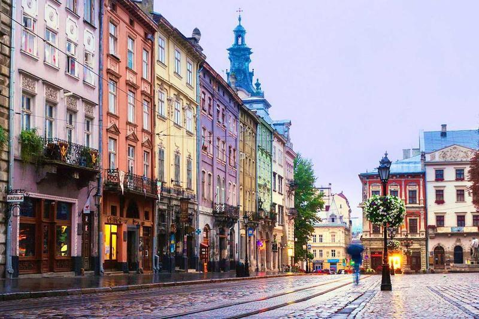

Львів
До Львова можна приїхати не лише у відпустку, а й на звичайний вікенд. Місто просочене романтикою, красивою архітектурою, європейськими вуличками, кав'ярнями та колоритними місцевими ресторанами.

До Львова можна приїхати не лише у відпустку, а й на звичайний вікенд. Місто просочене романтикою, красивою архітектурою, європейськими вуличками, кав'ярнями та колоритними місцевими ресторанами.